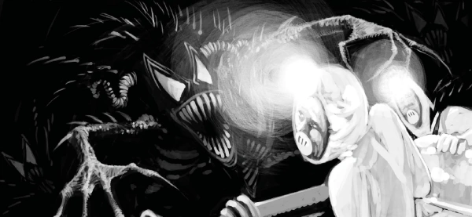

This deadly alien stalks the Mega-City, effectively besting Dredd and eventually becoming a dangerous sidekick for Jack Point.
Art by Dean Ormston
| Story Title | Parts | Pages | w indicates a wraparound coverCovers | Year(s) | Issues | Writer | Artist | Colourist | Letterer |
|---|---|---|---|---|---|---|---|---|---|
From Judge DreddRaptaur | 7 | 62 | M1.11: Dean Ormston M1.14: Simon Bisley M1.17: Dean Ormston 3 | 1991-1992 | Reprints: M297 (supplement)M1.11-1.17 | Alan Grant | Dean Ormston | <-- | Tom Frame |
From Judge DreddRaptaur Returns | 1 | 8 | Dean Ormston 1 | 1995 | JDMS8 | Alan Grant | Listed as: John Cromer Sammy Martini Maybe really: Tony Luke Dean Ormston various | <-- | Fiona Stephenson |
From The Simping DetectiveCrystal Blue | 3 | 24 | M222: Frazer Irving 1 | 2004 | M221-M223 | Simon Spurrier | Frazer Irving | [greyscale], [spot color] | Tom Frame |
From The Simping DetectiveInnocence: A Broad | 3 | 24 | M226: Frazer Irving 1 | 2004 | M224-M226 | Simon Spurrier | Frazer Irving | [greyscale] | Tom Frame |
From The Simping DetectivePlaying Futsie | 3 | 24 | M234: Frazer Irving 1 | 2005 | M234-M236 | Simon Spurrier | Frazer Irving | [greyscale], [two-tone] | Tom Frame |
From The Simping DetectivePetty Crimes | 2 | 16 | 0 | 2005 | M238-M239 | Simon Spurrier | Frazer Irving | [greyscale], [spot color] | Tom Frame |
From The Simping DetectiveNo Body, No How | 5 | 30 | 0 | 2006-2007 | M253-M257 | Simon Spurrier | Frazer Irving | [greyscale], [spot color] | Ellie de Ville |
From The Simping Detective Part of the Trifecta build‑up.Jokers to the Right | 8 | 42 | 1804: Cliff Robinson & Dylan Teague (C) 1809: Tiernen Trevallion 2 | 2012 | 1804-1811 | Simon Spurrier | Simon Coleby | [spot color] | Simon Bowland |
From Judge Dredd, Low Life & The Simping Detective Has three supertitles: ‑ Judge Dredd ‑ Low Life ‑ The Simping DetectiveTrifecta | 1 | 28 | Cliff Robinson & Dylan Teague (C) 1 | 2012 | 1812 | Al Ewing Simon Spurrier Rob Williams various | Carl Critchlow | <-- | Simon Bowland |
| year | episodes | pages |
| 1983 | 0 | 0 |
| 1984 | 0 | 0 |
| 1985 | 0 | 0 |
| 1986 | 0 | 0 |
| 1987 | 0 | 0 |
| 1988 | 0 | 0 |
| 1989 | 0 | 0 |
| 1990 | 0 | 0 |
| 1991 | 6 | 54 |
| 1992 | 1 | 8 |
| 1993 | 0 | 0 |
| 1994 | 0 | 0 |
| 1995 | 1 | 8 |
| 1996 | 0 | 0 |
| 1997 | 0 | 0 |
| 1998 | 0 | 0 |
| 1999 | 0 | 0 |
| 2000 | 0 | 0 |
| 2001 | 0 | 0 |
| 2002 | 0 | 0 |
| 2003 | 0 | 0 |
Core (non-cameo) comic strip data: